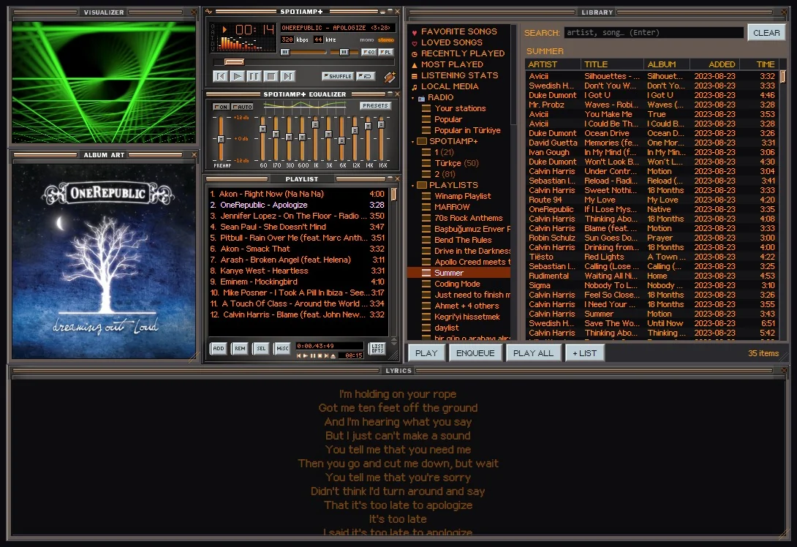
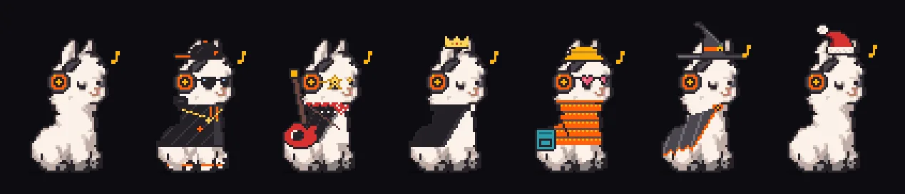
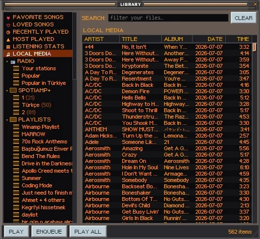
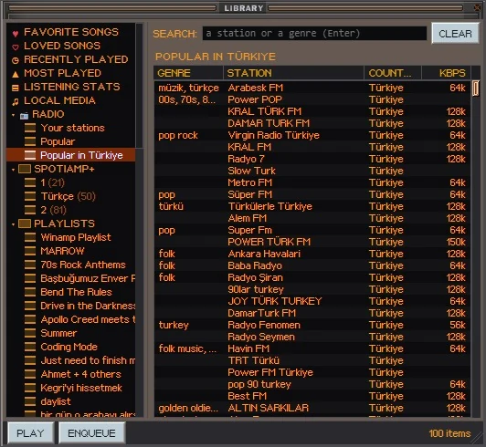
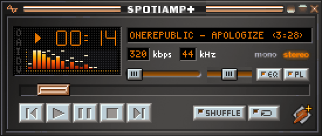
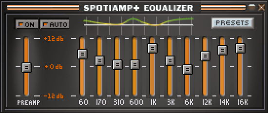
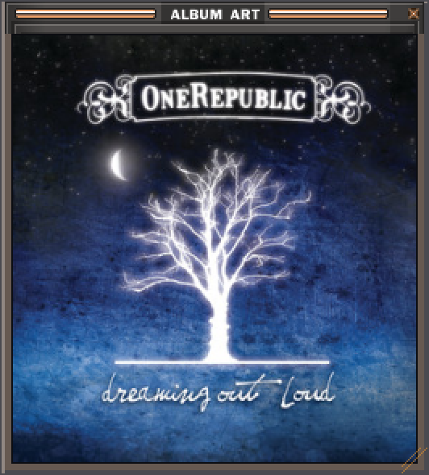
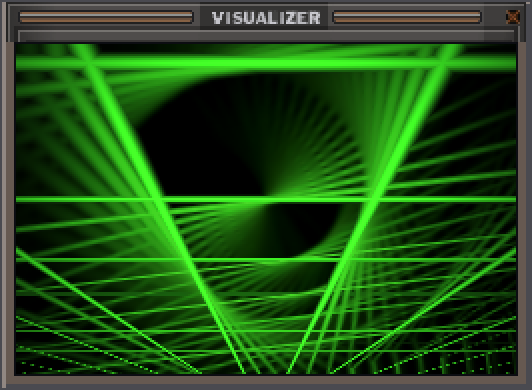
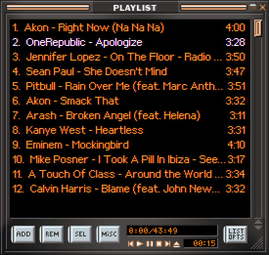
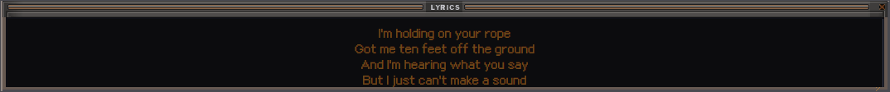

Spotify
Premium plays right in Spotiamp+. A Free account gets Free Mode: Spotiamp+ becomes the Winamp face of the Spotify app and drives it. Your playlists, Liked Songs and search are all in the Library.
Free · Open source · Windows 10 and 11
Real Winamp skins, the 10-band equalizer, MilkDrop and full keyboard control, for your Spotify. The music plays in the app itself: no web player, no browser tab.

Skins
Eleven come with it. Thousands more are one click away in the built-in Skin Museum, and any Winamp 2 skin (.wsz) you have works too. Skins dress every window, the Library included: their cursors, their window shapes, their titlebars and fonts.
The Classified skins are by Victhor; the Sony and Nucleo skins by their authors. All rights stay with them.
MilkDrop
Real MilkDrop presets, drawn by projectM and moving with every beat. 534 presets come with it, 183 of them by Incubo, among them takes on Spotiamp+'s own patterns. Press M in the visualizer, double-click for full screen, heart your favourites, or drop in your own .milk files.
Prefer something lighter? The visualizer has its own patterns too, and the main window's spectrum is drawn the Winamp way, in the skin's own colours.
Meet Lala
She dances to the beat, naps when the music stops, cheers for new badges and pops over to your other windows when she's bored. Your listening badges open 20 outfits for her, and on Halloween and over the New Year she wears a costume.

Your music
Premium plays right in Spotiamp+. A Free account gets Free Mode: Spotiamp+ becomes the Winamp face of the Spotify app and drives it. Your playlists, Liked Songs and search are all in the Library.
Add your music folders once and every song is in the Library, with artist, album and length, to sort and filter as you type. MP3, FLAC, M4A, WAV and OGG, next to your Spotify songs.
Thousands of stations by name or genre, the most listened ones near you, and any stream link with Ctrl+L. AAC+ and HLS in full quality, through the EQ and the visualizers.


A closer look
Pixel for pixel, the way Winamp drew them, and each one docks to the others like it did.

The song scrolling in the skin's own letters, kbps and kHz, the spectrum or the oscilloscope, shuffle and repeat, a windowshade mode and Ctrl+D for double size.

Ten bands and a preamp, presets, Winamp's own .eqf files, and AUTO: a curve for a song or an artist comes back whenever they play.

The cover in a window of its own, square at any size.

A hundred patterns of its own, and MilkDrop one key away. Double-click for full screen.

Drag songs in from anywhere, find one with J, queue one with Q, and save your lists.

The words light up as they're sung, in three sizes. Click a line to jump there.
What you play goes on your Last.fm profile, even after a spell without internet.
Your top songs and artists, badges, streaks, and a Rewind of your year.
Friends see what you're playing, with its cover. Radio shows with the station's name.
A new version shows up as a button. One click, and everything stays as it was.
Your hands remember
Arrows for volume and seeking, J to find a song, Ctrl+D for double size, and F1 for every key.
Questions
For Spotiamp+ to play the music itself, yes: that only works with Premium. A Free account gets Free Mode, where Spotiamp+ drives the official Spotify app (keep it open) and the Winamp windows show and control what it plays. Your own files and the radio work either way.
Spotiamp+ isn't code-signed (certificates are costly), so SmartScreen warns about any new download like it. Click More info, then Run anyway. The whole source is open on GitHub, and every release is built from it.
No. You log in on Spotify's own page in your browser, and Spotiamp+ only gets a token. Nothing about you is sent anywhere else: see the privacy policy.
No. Spotiamp+ is an independent, open source project, not affiliated with or endorsed by Spotify or Winamp. It grew out of Ted Steen's Spotiamp.
Windows 10 and 11 (64-bit) for now.
Come say hi on Discord or open an issue on GitHub, with your Spotiamp+ and Windows versions.
Free, open source, and a few seconds to install.